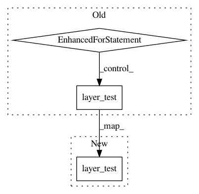

6fb506979a4074e3b935ce22999311c22f6dce6a,tests/keras/layers/advanced_activations_test.py,,test_relu,#,39
Before Change
def test_relu():
for max_value in [None, 1., 6.]:
layer_test(layers.ReLU, kwargs={"max_value": max_value},
input_shape=(2, 3, 4))
if __name__ == "__main__":
pytest.main([__file__])
After Change
def test_relu():
layer_test(layers.ReLU,
kwargs={"max_value": 10,
"negative_slope": 0.2,
"threshold": 3.0},
input_shape=(2, 3, 4))
// max_value of ReLU layer cannot be negative value
with pytest.raises(ValueError):
layer_test(layers.ReLU, kwargs={"max_value": -2.0},
In pattern: SUPERPATTERN
Frequency: 3
Non-data size: 3
Instances
Project Name: keras-team/keras
Commit Name: 6fb506979a4074e3b935ce22999311c22f6dce6a
Time: 2018-09-28
Author: ybliang8@gmail.com
File Name: tests/keras/layers/advanced_activations_test.py
Class Name:
Method Name: test_relu
Project Name: keras-team/keras
Commit Name: 9405be8f838f44cb9cd8924bbf7604de880ada6a
Time: 2017-03-26
Author: joelthchao@gmail.com
File Name: tests/keras/layers/local_test.py
Class Name:
Method Name: test_locallyconnected_1d
Project Name: keras-team/keras
Commit Name: 5f94aef6685289c5451f24bcfdb2ab24e2bc87df
Time: 2017-03-04
Author: francois.chollet@gmail.com
File Name: tests/keras/layers/convolutional_test.py
Class Name:
Method Name: test_conv2d_transpose